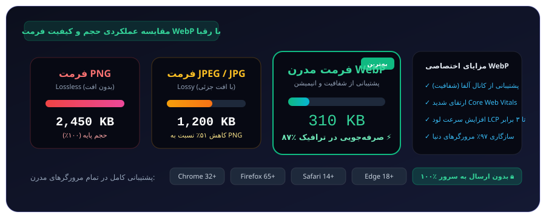

کاهش حجم تصاویر تا ۸۵٪ بدون افت کیفیت محسوس؛ افزایش سرعت لود سایت و رتبه سئو بدون ارسال حتی یک بایت به سرور (کاملاً محلی در مرورگر).
پشتیبانی از فرمتهای PNG, JPG, JPEG, GIF, SVG, BMP و WebP • پردازش تکی و گروهی
برای شروع، تصاویر خود را در کادر بالا رها کنید یا روی دکمه نمونه تست کلیک نمایید.
فرمت مدرن گوگل با کاهش چشمگیر حجم و حفظ شفافیت آلفا، مهمترین فاکتور بهبود نمره سرعت و سئو است.

اینفوگرافیک ۱: مقایسه حجم فایل، الگوریتمهای فشردهسازی و پشتیبانی مرورگرها در فرمت WebP
تصاویر بزرگترین عامل کندی LCP در وبسایتها هستند. تبدیل به WebP باعث لود فوری و پاسشدن تستهای سرعت گوگل میشود.
برخلاف فرمت JPEG که از ترنسپرنسی پشتیبانی نمیکند، WebP تصاویر بدون پسزمینه را با حجم بسیار کمتر از PNG ذخیره میکند.
کلیه عملیات تغییر ابعاد و فشردهسازی در پردازنده مرورگر شما انجام میشود و اطلاعات هرگز به سرور ارسال نخواهند شد.